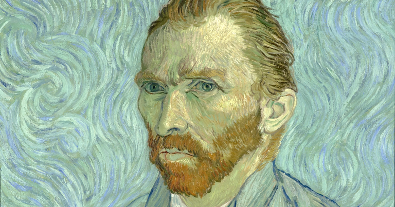

Vincent Van Gogh
El famoso pintor Holandés nacido en 1852, fué un niño difícil, sensible y nervioso.
Ayach, Maria Candela
ARTE, BELLEZA Y LOCURA
EN UNA VIDA
AL ÓLEO
Su amor por la pintura comenzó a los 27 años, cuando decidió ser pintor. Como para él no era fácil comunicarse con los demás, escogió el camino del arte para expresar sus sentimientos. Con el fin de prepararse para ello, comenzó por copiar los dibujos de un pintor a quien admiraba: Jean-Francois Millet.
Los temas que trato en aquella época fueron los relacionados con mineros y campesinos. Además, la naturaleza le llamaba mucho la atención. Así optó por crear una naturaleza propia utilizando sus colores y su imaginación.
Encuentra bello todo lo que puedas; la mayoría no encuentra nada suficientemente bello.
Vincent Van Gogh
Encuentra bello todo lo que puedas; la mayoría no encuentra nada suficientemente bello.
Vincent Van Gogh
La obra de Van Gogh se inicia con una pintura de tonos oscuros, con trazos gruesos y vigorosos; añadió a sus pinceladas puntos y rayas y, sobre todo, adoptó los colores puros. Sus pinceladas hacían que los objetos representados parecieran dotados de movimiento, como si estuvieran animados por intensas emociones.
Vincent fue siempre un hombre solitario y su naturaleza autodestructiva le condujo años más tarde al borde de la locura. Padeció epilepsia hereditaria y en una crisis de locura se cortó el lóbulo de la oreja. Poco después fue internado. En 1890 volvió a París donde se suicidó de un tiro de revólver.
No fue un pintor reconocido en vida, pero alcanzó gran celebridad a partir de 1891 en el Salón de los Artistas Independientes. En la actua-lidad sus cuadros alcanzan cifras récords en las subastas de arte. A pesar de haber tenido una carrera de sólo 10 años (1881-1890) su obra fue muy productiva: alrededor de 871 pinturas, de las cuales 463 las realizó durante los últimos treinta meses de su vida.
Las pinceladas puntillistas y líneas ondulantes de sus cuadros son consideradas sublimes por los expertos. El pintor no sólo dominaba una técnica innovadora para su tiempo, sino que logró construir una propuesta estética sólida, en la que conviven trazos impresionistas, contrastes surrealistas y formas con gran fuerza expresiva.